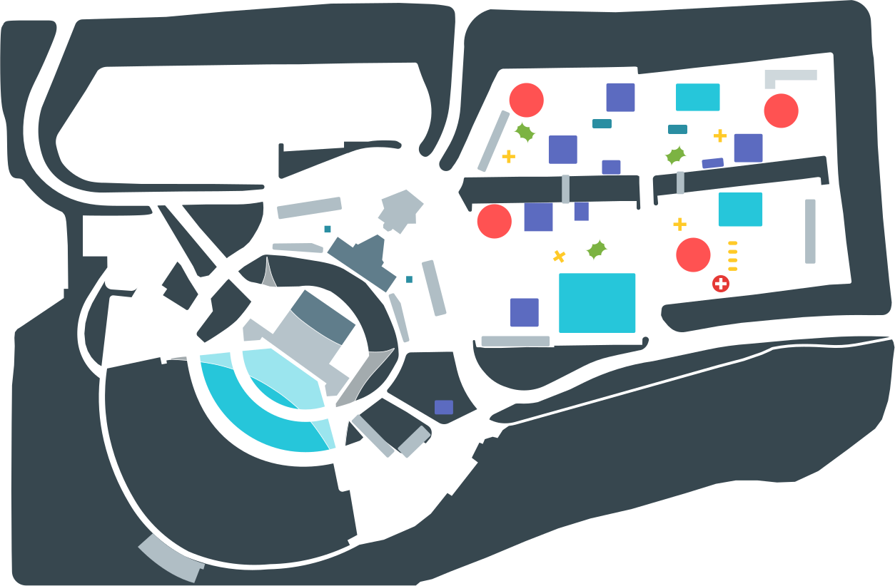

<!--
Copyright 2016 Google Inc. All rights reserved.
Licensed under the Apache License, Version 2.0 (the "License");
you may not use this file except in compliance with the License.
You may obtain a copy of the License at
  http://www.apache.org/licenses/LICENSE-2.0
Unless required by applicable law or agreed to in writing, software
distributed under the License is distributed on an "AS IS" BASIS,
WITHOUT WARRANTIES OR CONDITIONS OF ANY KIND, either express or implied.
See the License for the specific language governing permissions and
limitations under the License.
-->

<link rel="import" href="../bower_components/polymer/polymer.html">
<link rel="import" href="../bower_components/iron-icon/iron-icon.html">
<link rel="import" href="../bower_components/iron-scroll-threshold/iron-scroll-threshold.html">
<link rel="import" href="../bower_components/paper-toolbar/paper-toolbar.html">
<link rel="import" href="../bower_components/paper-icon-button/paper-icon-button.html">
<link rel="import" href="../bower_components/paper-tabs/paper-tabs.html">

<link rel="import" href="../bower_components/paper-dialog/paper-dialog.html">
<link rel="import" href="../bower_components/neon-animation/animations/scale-up-animation.html">
<link rel="import" href="../bower_components/neon-animation/animations/fade-out-animation.html">

<link rel="import" href="io-gallery.html">
<link rel="import" href="shared-app-styles.html">
<link rel="import" href="PageBehavior.html">

<dom-module id="io-attend-page">
<template>
  <style include="shared-app-styles">
    :host {
      display: block;
    }
  </style>

<div id="mastheadContainer" class="masthead-container" layout horizontal end>
  <div class="masthead-meta">
    <h1 class="focus-target" tabindex="-1">Attending</h1>
  </div>
</div>

<!-- backdrop shouldn't be applied on ios - github.com/Polymer/paper-dialog/issues/16 -->
<paper-dialog id="venueMap" class="venue__map scrollable"
              entry-animation="scale-up-animation"
              exit-animation="fade-out-animation"
              with-backdrop="[[!app.isIOS]]">
  <div class="scrollable">
    <div class="dialog-content">
      <paper-icon-button icon="io:close" dialog-dismiss
                         aria-label="Close map" style="color: #ffffff;"></paper-icon-button>

      <h2>Shoreline Amphitheatre</h2>
      <a class="dialog-download" href="#map">Download map</a>
    </div>

    

    <div class="dialog-content">
      <ul class="map-legend">
        <li><span class="dot bg-indigo-400"></span>Sandbox + Sessions</li>
        <li><span class="dot bg-amber-400"></span>F&amp;B</li>
        <li><span class="dot bg-lightgreen-600"></span>RR</li>
        <li><span class="dot bg-red-A200"></span>Registration + Information</li>
        <li><span class="dot bg-bluegrey-200"></span>Production</li>
        <li><span class="dot bg-cyan-400"></span>Keynote + Concert</li>
      </ul>
    </div>

  </div>
</paper-dialog>


<div class="card__container">
  <div class="card">
    <div class="subpage__container">

      <div id="subnav" class="subpage__nav bg-cyan-400" layout horizontal justified>
        <paper-tabs id="subpage-tabs" class="white"
                    attr-for-selected="label"
                    selected="[[selectedSubpage]]">
          <paper-tab label="event" link>
            <a href="#event" data-track-link="attending-event" data-ajax-link
               layout horizontal center-center
               tabindex="-1">Event</a>
          </paper-tab>
          <paper-tab label="travel" link>
            <a href="#travel" data-track-link="attending-travel" data-ajax-link
               layout horizontal center-center
               tabindex="-1">Travel</a>
          </paper-tab>
        </paper-tabs>
      </div>

      <!-- Event tab content -->
      <section class$="subpage-event subpage__content {{_applyActiveClassWhenSubpage(selectedSubpage, 'event')}}">
        <div class="slide-up">

          <div layout horizontal wrap>
            <div class="card" layout horizontal wrap>
              <div class="card-content box bg-cyan-300" layout vertical>
                <h5 style="font-weight: normal;">
                  Get all the information you need to make the most of your I/O experience, from maps and check-in information to local guides and night life.
                </h5>
                <div layout flex end>
                  <a class="card__footerlink" href="#download" layout horiziontal justified center flex>
                    Download the guide
                    <iron-icon icon="icons:file-download"></iron-icon>
                  </a>
                </div>
              </div>
              <a class="card-content box card-map" href="#map" layout vertical on-click="openMap">
                <div layout flex end>
                  <span class="card__footerlink" layout horiziontal justified center flex>
                    View the map
                    <iron-icon icon="icons:launch"></iron-icon>
                  </span>
                </div>
              </a>
            </div>
          </div>

          <section class="details bg-bluegrey-50-40">
            <div class="details--wrapper sandbox">
              <div class="details--icon-container">
                <div class="details--icon"></div>
              </div>
              <div class="details--text-container">
                <h3 class="details--title">Sandbox</h3>
                <div class="details--info-block">
                  <p>
                    Shorter talks in pop-up spaces in the sandbox, letting you hear directly from us about developing with our latest APIs and tools.
                  </p>
                </div>
              </div>
            </div>

            <div class="details--wrapper code-labs">
              <div class="details--icon-container">
                <div class="details--icon"></div>
              </div>
              <div class="details--text-container">
                <h3 class="details--title">Code Labs</h3>
                <div class="details--info-block">
                  <p>
                    Hands-on space to work through technical modules at your own pace, with experts on hand to help you out.
                  </p>
                </div>
              </div>
            </div>

            <div class="details--wrapper office-hours">
              <div class="details--icon-container">
                <div class="details--icon"></div>
              </div>
              <div class="details--text-container">
                <h3 class="details--title">Office Hours</h3>
                <div class="details--info-block">
                  <p class="detail__text">
                    Swing by office hours with Google experts to receive one-on-one help with your projects and apps.
                  </p>
                </div>
              </div>
            </div>

            <div class="details--wrapper after-hours">
              <div class="details--icon-container">
                <div class="details--icon"></div>
              </div>
              <div class="details--text-container">
                <h3 class="details--title">After Hours</h3>
                <div class="details--info-block">
                  <p class="detail__text">
                    Registered attendees are invited to party with us After Hours, mingling in a fun and relaxed environment while enjoying food, drinks, music, games and more.
                  </p>
                </div>
              </div>
            </div>
          </section>

          <div class="card-after-hours card-content box box-full fullbleed typo-white" layout vertical></div>

          <div class="io__hash io__hash-bottom" aria-label="I/O hash tag"></div>

        </div>
      </section>
      <!-- end Event content -->


      <!-- Travel tab content -->
      <section class$="subpage-travel subpage__content {{_applyActiveClassWhenSubpage(selectedSubpage, 'travel')}}">
        <div class="slide-up">

          <div layout horizontal wrap>
            <div class="card" layout horizontal wrap>
              <div class="card-content box bg-cyan-300" layout vertical>
                <h5 style="font-weight: normal;">
                  To celebrate a decade of working closely with the developer community, we&rsquo;ll be hosting I/O in our backyard at the Shoreline Amphitheatre in Mountain View, CA, a venue that has played host to some of the world&rsquo;s biggest entertainers and events. We can&rsquo;t wait to get hands on with code and share our latest product innovations with you in this space.
                </h5>
              </div>
              <div class="card-content box card__photo" relative>
                <div class="card--top-right-clip">
                  <a class="typo-white" href="https://www.google.com/maps/contrib/117863668777896648385/photos/@45.5494341,-122.6581997,15z" target="_blank">Photo by Thorsten Schaeff</a>
                </div>
              </div>
            </div>
          </div>

          <section class="details bg-bluegrey-50-40">
            <div class="details--wrapper airports">
              <div class="details--icon-container">
                <div class="details--icon"></div>
              </div>
              <div class="details--text-container">
                <h3 class="details--title">Getting to Mountain View</h3>
                <div class="details--info-block"><p>Here are the three major airports in the Bay Area with international airline service:</p></div>
                <div class="details--info-block">
                  <a class="detail__link" href="https://www.google.com/maps/dir/San+Francisco+International+Airport,+San+Francisco,+CA+94128/Shoreline+Amphitheatre,+Amphitheatre+Parkway,+Mountain+View,+CA/@37.5203984,-122.3799704,11z/data=!3m1!4b1!4m17!4m16!1m5!1m1!1s0x808f778c55555555:0xa4f25c571acded3f!2m2!1d-122.3789554!2d37.6213129!1m5!1m1!1s0x808fb9f776f5e165:0x1ddf014a1b553f3d!2m2!1d-122.0807647!2d37.4267703!2m2!7e2!8j1463556000!3e0?hl=en" target="_blank">San Francisco International Airport (SFO)</a>
                  <p class="detail__distance">~24 miles</p>
                </div>
                <div class="details--info-block">
                  <a class="detail__link" href="https://www.google.com/maps/dir/Oakland+International+Airport,+Oakland,+CA/Shoreline+Amphitheatre,+Amphitheatre+Parkway,+Mountain+View,+CA/@37.5755915,-122.270249,11z/data=!3m1!4b1!4m18!4m17!1m5!1m1!1s0x808f845402c0a641:0xb0630c0f03017460!2m2!1d-122.2197428!2d37.7125689!1m5!1m1!1s0x808fb9f776f5e165:0x1ddf014a1b553f3d!2m2!1d-122.0807647!2d37.4267703!2m3!6e0!7e2!8j1463556000!3e0?hl=en" target="_blank">Oakland International Airport (OAK)</a>
                  <p class="detail__distance">~32 miles</p>
                </div>
                <div class="details--info-block">
                  <a class="detail__link" href="https://www.google.com/maps/dir/San+Jose+International+Airport-Sjc,+Airport+Boulevard,+San+Jose,+CA,+United+States/Shoreline+Amphitheatre,+Amphitheatre+Parkway,+Mountain+View,+CA/@37.3953381,-122.0740073,12z/data=!3m1!4b1!4m17!4m16!1m5!1m1!1s0x808fcbc3fab3c59b:0xbcfa443f6df67e3e!2m2!1d-121.9289375!2d37.3639472!1m5!1m1!1s0x808fb9f776f5e165:0x1ddf014a1b553f3d!2m2!1d-122.0807647!2d37.4267703!2m2!7e2!8j1463556000!3e0?hl=en" target="_blank">San Jose International Airport (SJC)</a>
                  <p class="detail__distance">~12 miles</p>
                </div>
                <div class="details--info-block">
                  <p class="detail__text">Find your flight to I/O on <a class="detail__link" href="https://www.google.com/flights/" target="_blank">flights.google.com</a>.</p>
                </div>
              </div>
            </div>

            <div class="details--wrapper transit">
              <div class="details--icon-container">
                <div class="details--icon"></div>
              </div>
              <div class="details--text-container">
                <h3 class="details--title">Getting to Shoreline Amphitheatre</h3>
                <div class="details--info-block">
                  <p>
                    Plan ahead, expect traffic delays (use <a href="https://www.google.com/maps" target="_blank">Google Maps</a> and <a href="https://www.waze.com/" target="_blank">Waze</a>), be patient, and consider carpooling or biking. We also strongly advise using the provided event shuttles.
                  </p>
                </div>
                <div class="details--info-block">
                  <h5 class="detail__heading">Shuttle Service</h5>
                  <p class="detail__text">
                    Event shuttles will be provided to Google I/O attendees at no charge from all Google-recommended hotels and with select service from San Francisco and other locations along the Peninsula. Please check back in the coming weeks for pick-up schedules and additional locations.</p><p class="detail__text">Each pick-up location will have ADA accessible vehicles. Please indicate on your registration form if you have any ADA or special assistance requirements and the planning team will follow up with you directly.
                  </p>
                </div>
                <div class="details--info-block">
                  <h5 class="detail__heading">Public Transportation</h5>
                  <p class="detail__text">Public transportation to the area is accessible via:</p>
                </div>
                <div class="details--info-block">
                  <p class="detail__text no-bottom-margin"><a href="http://www.caltrain.com/" target="_blank">Caltrain:</a> Regional rail system</p>
                  <p class="detail__text no-bottom-margin"><a href="http://www.vta.org/getting-around/interactive-light-rail-map" target="_blank">VTA:</a> Light rail system servicing the South Bay</p>
                  <p class="detail__text no-bottom-margin"><a href="https://www.bart.gov/" target="_blank">BART:</a> Bay Area Rapid Transit</p>
                </div>
                <div class="details--info-block">
                  <p class="detail__text">Public transit does not go directly to Google I/O. Stay tuned over the coming weeks for exact transportation locations serviced by Google I/O event shuttles.</p>
                </div>
                <div class="details--info-block">
                  <h5 class="detail__heading">Bike</h5>
                  <p class="detail__text">
                    Bike parking will be available at Shoreline Amphitheatre. Recommended bike routes will be available in the coming weeks.
                  </p>
                  <p class="detail__text">
                    Alternatively, the <a class="detail__link" href="http://www.bayareabikeshare.com/stations" target="_blank">Bay Area Bike Share</a> program provides 24/7 access to shared bicycles in five service areas across the Peninsula. The closest location to Shoreline Amphitheatre is at 228 Charleston Road, Mountain View, CA 94043. More information regarding membership and pricing is available via the Bay Area Bike Share website.
                  </p>
                </div>
              </div>
            </div>

            <div class="details--wrapper parking">
              <div class="details--icon-container">
                <div class="details--icon"></div>
              </div>
              <div class="details--text-container">
                <h3 class="details--title">Parking and Carpooling</h3>
                <div class="details--info-block">
                  <p class="detail__text">
                    Parking is very limited and available only in the Google I/O designated lots located across from Shoreline Amphitheater along Shoreline Boulevard.
                  </p>
                  <p class="detail__text">
                    There is no event parking along Amphitheater Parkway or Charleston Road. If you plan to drive, we recommend carpooling with other attendees due to limited parking availability at the venue. Preferred parking spaces will be available for cars containing 2 or more people.
                  </p>
                </div>
              </div>
            </div>

            <div class="details--wrapper hotels">
              <div class="details--icon-container">
                <div class="details--icon"></div>
              </div>
              <div class="details--list-text">
                <div class="details--text-container">
                  <h3 class="details--title">Hotels</h3>
                  <div class="details--info-block">
                    <p class="detail__text">We have room blocks at many hotels. Use the map below to find a hotel that&rsquo;s best for you.</p>
                  </div>
                </div>
              </div>
            </div>
          </section>

          <section id="mapContainer">
            <template is="dom-if" if="[[_loadMap]]">
              <iframe src="https://www.google.com/maps/d/u/0/embed?mid=zhj-bilAxwho.kAQv4c7VcqU4" width="100%" height="100%"></iframe>
            </template>
          </section>

          <div class="io__hash io__hash-bottom" aria-label="I/O hash tag"></div>

        </div>
      </section>
      <!-- end Travel content -->

    </div> <!-- .subpage__container -->
  </div> <!-- .card -->
</div> <!-- .card__container -->

<iron-scroll-threshold id="threshold" hidden
      lower-triggered="{{_scrolledToMapSection}}"></iron-scroll-threshold>

</template>
<script>
(function () {
  'use strict';

  Polymer({
    is: 'io-attend-page',

    behaviors: [IOBehaviors.PageBehavior],

    title: 'Attending',
    name: 'attend',
    hasSubnav: true, // Toggles the subnav scroll effects.

    properties: {
      _loadMap: {
        type: Boolean,
        computed: '_computeLoadMap(app.pageTransitionDone, selectedSubpage, _scrolledToMapSection)'
      },

      /**
       * The selected subpage/tab.
       */
      selectedSubpage: {
        type: String,
        value: 'event',
        notify: true
      }
    },

    attached: function() {
      this.listen(IOWA.Elements.ScrollContainer, 'scroll', '_onPageScroll');

      this.$.threshold.scrollTarget = IOWA.Elements.ScrollContainer;

      // Calculate top of tweet cycler / hashtag video section.
      this.$.threshold.lowerThreshold = IOWA.Elements.Footer.clientHeight +
          parseInt(getComputedStyle(IOWA.Elements.Footer).height) +
          Polymer.dom(this.root).querySelector('.io__hash').clientHeight;
    },

    detached: function() {
      this.unlisten(IOWA.Elements.ScrollContainer, 'scroll', '_onPageScroll');
    },

    onSubpageTransitionDone: function() {
      this.set('app.headerReveals', true);

      // Reset FAB position after new DOM is set.
      IOWA.Elements.Template.initFabScroll();
    },

    _onPageScroll: function() {
      this.disableElementOnScroll(this.$.mapContainer);
    },

    _computeLoadMap: function(pageTransitionDone, selectedSubpage, scrolledEnough) {
      return pageTransitionDone && selectedSubpage == 'travel' && scrolledEnough;
    },

    openMap: function(e) {
      e.preventDefault();
      this.$.venueMap.open();
    }

  });

}());
</script>
</dom-module>
